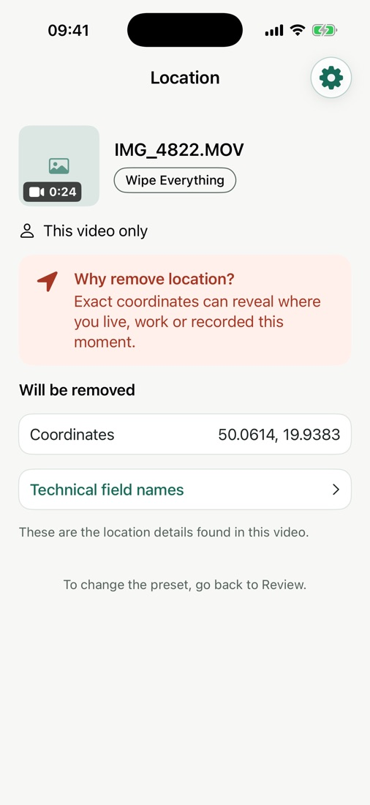
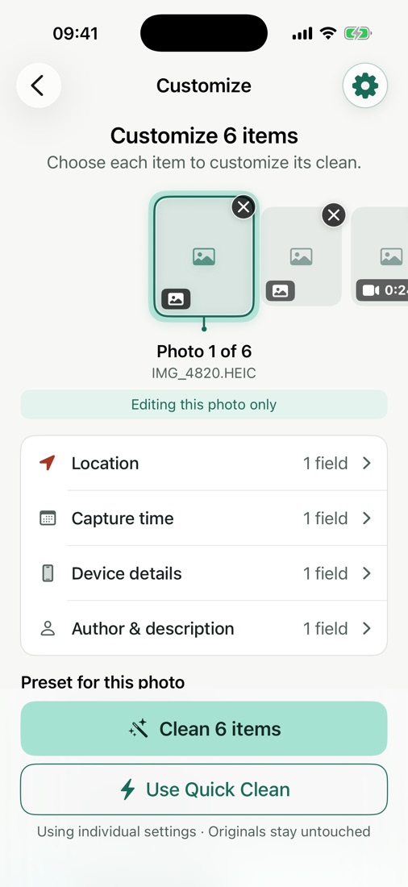
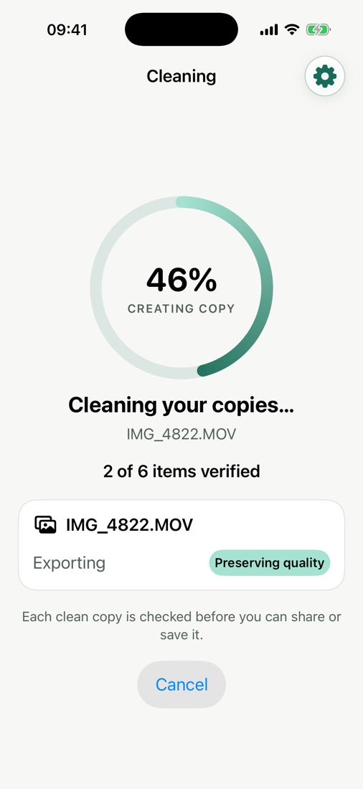
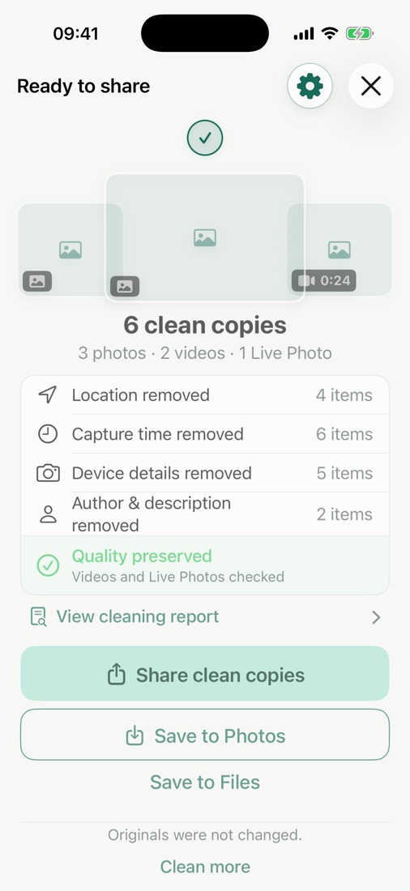

Share moments.
Not your private data.
Every photo you take can carry your exact location, the time, your phone model and your name. Wipe shows you what’s hidden — and makes clean copies before you share.
- Works on your iPhone
- No account
- Originals untouched
Your photo says more than you think.
Metadata is invisible in the picture but travels with the file — to chats, email, marketplaces and cloud folders. Wipe finds it and explains it in plain language.
GPS coordinates down to your street, home or workplace.
The exact date and minute the moment happened.
Your phone model, camera and lens details.
Names and ownership fields added by apps.
Which software touched the file, and when.
Descriptions and tags you may have forgotten.

Choose. Review. Share clean.
Pick photos, videos or Live Photos, see what each one reveals, and get verified clean copies in seconds.

See what’s inside
Every item is scanned on your iPhone. Tap any category to see the exact values.

Clean and verify
Wipe removes what you chose, then re-checks every copy before you can share it.

Share with confidence
Send them anywhere, save them to Photos or Files. Your originals stay as they were.
Only the metadata changes.
Not a single pixel.
Most metadata removers save a new, recompressed copy. Wipe rewrites only the hidden details and copies your photo and video data as it is — then checks that it really is.
pixels changed in cleaned JPEG and HEIC photos
video and audio streams, copied bit for bit
Live Photos stay paired and keep playing
HDR and Portrait data left exactly where they were
When a file can’t be copied as it is, Wipe tells you before it creates a new encoded version — never silently.
Three ways to clean.
Start with the recommended preset, or tune it for a single photo when you need to.
Safe to Share
Everything that identifies you or where you were.
- −Location
- −Capture time
- −Device, author & editing apps
- +Keeps camera settings
Location Only
Hide where it was taken, keep the rest.
- −GPS coordinates & altitude
- −City and place names
- +Keeps date, camera & author
Wipe Everything
The cleanest possible copy.
- −All removable metadata
- +Keeps only what’s needed to display it correctly
A privacy app that keeps its word.
On your iPhone
Scanning and cleaning never leave the device.
No account
Nothing to sign up for, nothing to log in to.
No tracking
No ads, no analytics SDK, no profiles.
Originals untouched
Wipe only ever creates new copies.
Read the Privacy Policy.
See what your photos reveal.
Remove it before sharing.
Try your first cleans free. One-time unlock, no subscription.
Questions? Visit Support.